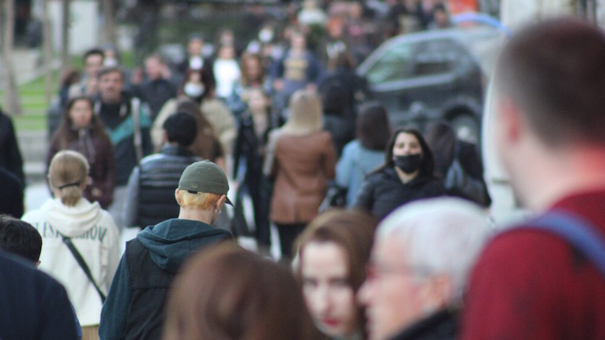
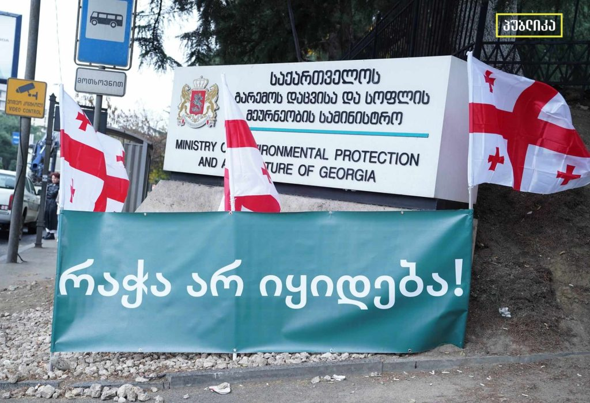

<!DOCTYPE html>
<html>
 <head>
	<title>მთავარი გვერდი</title>
	<link rel="stylesheet" type="text/css" href="../css/reset.css">
    <link rel="stylesheet" type="text/css" href="../css/style.css">
    <link rel="stylesheet" href="/bower_components/bpg-nostalgia/css/bpg-nostalgia.min.css">
   <header>
   	
   	
   	<a class="activepage" href="#">მთავარი</a>
   	<a href="../news/news.html">ჩვენს შესახებ</a>
    <a href="../servis/servis.html">სერვისები</a>
    <a href="../siaxleebi/siaxleebi.html">სიახლე</a>
   	<a href="../contact/contact.html">კონტაქტი</a>

    <a href="http://www.humanrights.ge/index.php?a=main&pid=20479&lang=geo">
               ეთნიკური უმცირესობები სამშვიდობო დიალოგის მიღმა</a>

    <a href="http://www.humanrights.ge/index.php?a=main&pid=20478&lang=geo">
    სამოქალაქო აქტივისტი და ჟურნალისტი ადმინისტრაციული სამართალდარღვევის საქმეზე გამართლდნენ</a>


    